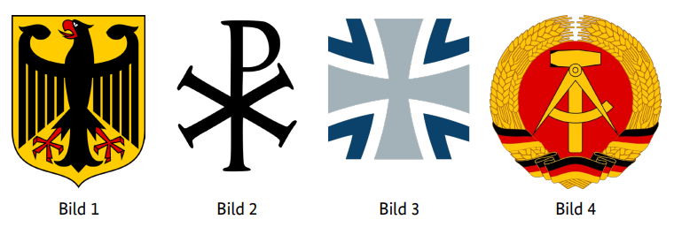

Diese Website verwendet Cookies, um Inhalte zu personalisieren und Zugriffe zu analysieren. Mehr erfahren
Stand: 07.05.2025 pre-alpha version 0.1 (21.05.2025)
1. In Deutschland dürfen Menschen offen etwas gegen die Regierung sagen, weil … У Німеччині люди можуть відкрито сказати щось проти уряду, бо … In Germany people are allowed to openly say something against the government because … في ألمانيا يُسمح للناس بالتعبير بحرية ضد الحكومة لأن … Almanya'da insanlar hükümete karşı açıkça bir şey söyleyebilirler çünkü … В Германия хората могат открито да кажат нещо срещу правителството, защото … در آلمان به مردم اجازه داده میشود بهطور آشکار چیزی علیه دولت بگویند زیرا … U Njemačkoj ljudi smiju otvoreno reći nešto protiv vlade jer … Во Германија луѓето можат отворено да кажат нешто против владата затоа што … W Niemczech ludzie mogą otwarcie powiedzieć coś przeciw rządowi, ponieważ … În Germania oamenilor li se permite să spună deschis ceva împotriva guvernului deoarece … In Germania le persone possono dire apertamente qualcosa contro il governo perché … जर्मनी में लोगों को सरकार के खिलाफ खुलकर कुछ कहने की अनुमति है क्योंकि …
2. In Deutschland können Eltern bis zum 14. Lebensjahr ihres Kindes entscheiden, ob es in der Schule am … В Німеччині батьки до досягнення дитиною 14 років можуть вирішити, чи братиме вона участь у … In Germany, parents can decide until their child is 14 whether they participate in … at school. في ألمانيا يمكن للوالدين حتى بلوغ طفلهم 14 عامًا أن يقررا ما إذا كان سيشارك في … في المدرسة. Almanya’da ebeveynler, çocukları 14 yaşına gelene kadar okulda … katılıp katılmayacağına karar verebilir. В Германия родителите могат до навършването на 14 години на детето си да решат дали то ще участва в … в училище. در آلمان والدین میتوانند تا قبل از ۱۴ سالگی فرزندشان تصمیم بگیرند که آیا او در … در مدرسه شرکت کند یا خیر. U Njemačkoj roditelji mogu do 14. rođendana djeteta odlučiti hoće li ono sudjelovati u … u školi. Во Германија, родителите до 14-годишна возраст на своето дете можат да одлучат дали тоа ќе учествува во … во училиште. W Niemczech rodzice mogą do ukończenia przez dziecko 14 lat zdecydować, czy będzie uczestniczyć w … w szkole. În Germania, părinții pot decide până când copilul lor împlinește 14 ani dacă va participa la … la școală. In Germania, i genitori possono decidere fino ai 14 anni del figlio se partecipa a … a scuola. जर्मनी में, माता-पिता अपने बच्चे के 14 साल की उम्र तक यह निर्णय ले सकते हैं कि वह स्कूल में … में भाग लेगा या नहीं।
3. Deutschland ist ein Rechtsstaat. Was ist damit gemeint? Німеччина є правовою державою. Що мається на увазі під цим? Germany is a state governed by law. What does that mean? ألمانيا دولة تحكمها القوانين. ماذا يعني ذلك؟ Almanya hukuk devleti demektir. Bu ne anlama geliyor? Германия е правова държава. Какво означава това? آلمان یک کشور قانونگرا است. این چه معنایی دارد؟ Njemačka je pravna država. Šta to znači? Германија е правна држава. Што значи тоа? Niemcy są państwem prawa. Co to oznacza? Germania este un stat de drept. Ce înseamnă asta? La Germania è uno stato di diritto. Cosa significa? जर्मनी एक कानूनी राज्य है। इसका क्या मतलब है?
4. Welches Recht gehört zu den Grundrechten in Deutschland? Яке право є одним із основних у Німеччині? Which right is one of the fundamental rights in Germany? أي حق هو أحد الحقوق الأساسية في ألمانيا؟ Almanya’da temel haklardan biri olan hak hangisidir? Кое право е едно от основните права в Германия? کدام حق یکی از حقوق اساسی در آلمان است؟ Koje pravo je jedno od osnovnih prava u Njemačkoj? Кое право е едно од темелните права во Германија? Które prawo jest jednym z praw podstawowych w Niemczech? Care drept este unul dintre drepturile fundamentale din Germania? Quale diritto è uno dei diritti fondamentali in Germania? कौन सा अधिकार जर्मनी में मौलिक अधिकारों में से एक है?
5. Wahlen in Deutschland sind frei. Was bedeutet das? Вибори в Німеччині вільні. Що це означає? Elections in Germany are free. What does that mean? الانتخابات في ألمانيا حرة. ماذا يعني ذلك؟ Almanya'da seçimler özgürdür. Bu ne anlama geliyor? Изборите в Германия са свободни. Какво означава това? انتخابات در آلمان آزاد هستند. این چه معنایی دارد؟ Izbori u Njemačkoj su slobodni. Šta to znači? Изборите во Германија се слободни. Што значи тоа? Wybory w Niemczech są wolne. Co to oznacza? Alegerile în Germania sunt libere. Ce înseamnă asta? Le elezioni in Germania sono libere. Cosa significa questo? जर्मनी में चुनाव स्वतंत्र हैं। इसका क्या मतलब है?
6. Wie heißt die deutsche Verfassung? Як називається німецька конституція? What is the name of the German constitution? ما اسم الدستور الألماني؟ Alman anayasasının adı nedir? Как се нарича германската конституция? نام قانون اساسی آلمان چیست؟ Kako se zove njemački ustav? Како се вика германскиот устав? Jak nazywa się niemiecka konstytucja? Cum se numește constituția germană? Come si chiama la costituzione tedesca? जर्मन संविधान का नाम क्या है?
7. Welches Recht gehört zu den Grundrechten, die nach der deutschen Verfassung garantiert werden? Das Recht auf … Яке право є одним із основних прав, які гарантуються Конституцією Німеччини? Право на … Which right is one of the fundamental rights guaranteed by the German Basic Law? The right to … أي حق هو أحد الحقوق الأساسية المضمونة بموجب القانون الأساسي الألماني؟ الحق في … Hangi hak, Alman Temel Yasası tarafından garanti edilen temel haklardan biridir? Recht auf … Кое право е едно от основните права, гарантирани от Основния закон на Германия? Правото на … کدام حق یکی از حقوق اساسی تضمینشده توسط قانون اساسی آلمان است؟ حق در … Koje pravo je jedno od osnovnih prava zajamčenih Njemačkim osnovnim zakonom? Pravo na … Кое право е едно од темелните права загарантирани со Основниот закон на Германија? Право на … Które prawo jest jednym z praw podstawowych gwarantowanych przez niemiecką Ustawę Zasadniczą? Prawo do … Care drept este unul dintre drepturile fundamentale garantate de Legea Fundamentală a Germaniei? Dreptul la … Quale diritto è uno dei diritti fondamentali garantiti dalla Legge Fondamentale della Germania? Il diritto a … कौन सा अधिकार जर्मनी के बुनियादी कानून द्वारा गारंटीकृत मौलिक अधिकारों में से एक है? अधिकार …
8. Was steht nicht im Grundgesetz von Deutschland? Що немає у Конституції Німеччини? What is not in the Basic Law of Germany? ما الذي لا يوجد في القانون الأساسي لألمانيا؟ Almanya Temel Yasasında neler yoktur? Какво не е включено в Основния закон на Германия? چه چیزی در قانون اساسی آلمان وجود ندارد؟ Šta nije sadržano u osnovnom zakonu Njemačke? Што не е вклучено во Основниот закон на Германија? Czego nie ma w Ustawie Zasadniczej Niemiec? Ce nu este inclus în Legea Fundamentală a Germaniei? Cosa non è incluso nella Legge Fondamentale della Germania? जर्मनी के बुनियादी कानून में क्या शामिल नहीं है?
9. Welches Grundrecht gilt in Deutschland nur für Ausländer / Ausländerinnen? Das Grundrecht auf … Яке основне право поширюється в Німеччині лише на іноземців? Основне право на … Which fundamental right applies in Germany only to foreigners? The fundamental right to … أي حق أساسي ينطبق في ألمانيا فقط على الأجانب؟ الحق الأساسي في … Almanya’da hangi temel hak sadece yabancılar için geçerlidir? … hakkı Кое основно право важи в Германия само за чужденци? Основното право на … کدام حق اساسی در آلمان فقط برای اتباع خارجی اعمال میشود؟ حق اساسی برای … Koje temeljno pravo vrijedi u Njemačkoj samo za strance? Pravo na … Кое темелно право важи во Германија само за странци? Право на … Które prawo podstawowe obowiązuje w Niemczech wyłącznie cudzoziemców? Prawo do … Care drept fundamental se aplică în Germania doar străinilor? Dreptul fundamental la … Quale diritto fondamentale si applica in Germania solo agli stranieri? Il diritto fondamentale a … कौन सा मौलिक अधिकार जर्मनी में केवल विदेशियों पर लागू होता है? … का मौलिक अधिकार
10. Was ist mit dem deutschen Grundgesetz vereinbar? Що відповідає Основному закону Німеччини? What is compatible with the German Basic Law? ما هو المتوافق مع القانون الأساسي الألماني؟ Alman Temel Yasası ile uyumlu olan nedir? Кое е съвместимо с Основния закон на Германия? چه چیزی با قانون اساسی آلمان سازگار است؟ Šta je u skladu s njemačkim Grundgesetzom? Што е во согласност со Основниот закон на Германија? Co jest zgodne z niemiecką ustawą zasadniczą? Ce este compatibil cu Legea Fundamentală a Germaniei? Cosa è compatibile con la Legge Fondamentale tedesca? जर्मन बुनियादी कानून के साथ क्या संगत है?
11. Wie wird die Verfassung der Bundesrepublik Deutschland genannt? Як називається конституція Федеративної Республіки Німеччина? What is the constitution of the Federal Republic of Germany called? بأي اسم تُسمى دستور جمهورية ألمانيا الاتحادية؟ Federal Almanya Cumhuriyeti anayasasına ne ad verilir? Как се нарича конституцията на Федерална република Германия? قانون اساسی جمهوری فدرال آلمان چه نام دارد؟ Kako se naziva ustav Savezne Republike Njemačke? Како се вика уставот на Сојузна Република Германија? Jak nazywa się konstytucja Republiki Federalnej Niemiec? Cum se numește constituția Republicii Federale Germania? Come si chiama la costituzione della Repubblica Federale di Germania? जर्मनी के संघीय गणराज्य के संविधान को क्या कहा जाता है?
12. Eine Partei im Deutschen Bundestag möchte die Pressefreiheit abschaffen. Ist das möglich? Партія в німецькому Бундестазі хоче скасувати свободу преси. Чи можливо це? A party in the German Bundestag wants to abolish freedom of the press. Is that possible? حزب في البوندستاغ الألماني يريد إلغاء حرية الصحافة. هل هذا ممكن؟ Alman Bundestag’ındaki bir parti basın özgürlüğünü kaldırmak istiyor. Bu mümkün mü? Партия в немския Бундестаг иска да премахне свободата на печата. Възможно ли е това? یک حزب در بوندستاگ آلمان میخواهد آزادی مطبوعات را لغو کند. آیا این ممکن است؟ Stranka u njemačkom Bundestagu želi ukinuti slobodu štampe. Je li to moguće? Партија во германскиот Бундестаг сака да ја укине слободата на печатот. Дали е тоа можно? Partia w niemieckim Bundestagu chce znieść wolność prasy. Czy to możliwe? O formațiune în Bundestag-ul german vrea să desființeze libertatea presei. Este posibil? Un partito nel Bundestag tedesco vuole abolire la libertà di stampa. È possibile? जर्मन बंडेस्टाग की एक पार्टी प्रेस की स्वतंत्रता को समाप्त करना चाहती है। क्या यह संभव है?
13. Im Parlament steht der Begriff „Opposition“ für… У парламенті термін «опозиція» означає … In Parliament, the term “Opposition” stands for … في البرلمان، يعني مصطلح "المعارضة" … Parlamento'da "Muhalefet" terimi neyi ifade eder … В парламента, терминът "опозиция" означава … در پارلمان، اصطلاح «اپوزیسیون» به چه معناست … U parlamentu, pojam "opozicija" označava … Во парламентот, терминот „опозиција“ значи … W parlamencie termin „opozycja” oznacza … În parlament, termenul „opoziție” înseamnă … Nel parlamento, il termine “opposizione” indica … संसद में “विपक्ष” शब्द का क्या अर्थ है …
14. Meinungsfreiheit in Deutschland heißt, dass ich … Свобода слова в Німеччині означає, що я … Freedom of expression in Germany means that I … حرية التعبير في ألمانيا تعني أنني … Almanya’da ifade özgürlüğü demek benim için … Свободата на изразяване в Германия означава, че аз … آزادی بیان در آلمان به این معنی است که من … Sloboda izražavanja u Njemačkoj znači da ja … Слобода на изразување во Германија значи дека јас … Wolność wypowiedzi w Niemczech oznacza, że ja … Libertatea de exprimare în Germania înseamnă că eu … La libertà di espressione in Germania significa che io … जर्मनी में अभिव्यक्ति की स्वतंत्रता का अर्थ है कि मैं …
15. Was verbietet das deutsche Grundgesetz? Що забороняє німецька конституція? What does the German Basic Law prohibit? ما الذي يحظره القانون الأساسي الألماني؟ Alman Temel Yasası neyi yasaklar? Какво забранява Основният закон на Германия? قانون اساسی آلمان چه چیزی را ممنوع میکند؟ Šta zabranjuje njemački Grundgesetz? Што го забранува Основниот закон на Германија? Co zabrania niemiecka Ustawa Zasadnicza? Ce interzice Legea Fundamentală a Germaniei? Cosa proibisce la Legge Fondamentale tedesca? जर्मन बुनियादी कानून क्या निषेध करता है?
16. Wann ist die Meinungsfreiheit in Deutschland eingeschränkt? Коли свобода слова в Німеччині обмежена? When is freedom of expression restricted in Germany? متى يتم تقييد حرية التعبير في ألمانيا؟ Almanya’da ifade özgürlüğü ne zaman kısıtlanır? Кога свободата на изразяване е ограничена в Германия? آزادی بیان در آلمان چه زمانی محدود میشود؟ Kada je sloboda izražavanja ograničena u Njemačkoj? Кога е ограничена слободата на изразување во Германија? Kiedy wolność wypowiedzi jest ograniczona w Niemczech? Când este limitată libertatea de expresie în Germania? Quando la libertà di espressione è limitata in Germania? जर्मनी में अभिव्यक्ति की स्वतंत्रता कब प्रतिबंधित होती है?
17. Die deutschen Gesetze verbieten … Німецькі закони забороняють … German laws prohibit … القوانين الألمانية تحظر … Alman yasaları şu yasaktır … Немските закони забраняват … قوانین آلمان ممنوع میکنند … Njemački zakoni zabranjuju … Германските закони го забрануваат … Niemieckie prawo zabrania … Legile germane interzic … Le leggi tedesche vietano … जर्मन कानून निषिद्ध करते हैं …
18. Welches Grundrecht ist in Artikel 1 des Grundgesetzes der Bundesrepublik Deutschland garantiert? Яке основне право гарантується у статті 1 Основного закону Федеративної Республіки Німеччина? Which fundamental right is guaranteed in Article 1 of the Basic Law of the Federal Republic of Germany? ما هو الحق الأساسي المكفول في المادة 1 من القانون الأساسي لجمهورية ألمانيا الاتحادية؟ Almanya Federal Cumhuriyeti Temel Kanunu'nun 1. maddesinde hangi temel hak garanti altına alınmıştır? Кое основно право е гарантирано в член 1 от Основния закон на Федерална република Германия? کدام حق اساسی در ماده 1 قانون اساسی جمهوری فدرال آلمان تضمین شده است؟ Koje temeljno pravo je zajamčeno u članku 1 Temeljnog zakona Savezne Republike Njemačke? Кое основно право е загарантирано во член 1 од Основниот закон на Федерална Република Германија? Które prawo podstawowe jest zagwarantowane w artykule 1 Ustawy Zasadniczej Republiki Federalnej Niemiec? Ce drept fundamental este garantat în articolul 1 din Legea Fundamentală a Republicii Federale Germania? Quale diritto fondamentale è garantito all'articolo 1 della Legge Fondamentale della Repubblica Federale di Germania? जर्मनी के संघीय गणराज्य के मौलिक कानून के अनुच्छेद 1 में कौन सा मूलभूत अधिकार सुनिश्चित किया गया है?
19. Was versteht man unter dem Recht der „Freizügigkeit“ in Deutschland? Що мається на увазі під правом «вільного пересування» у Німеччині? What is meant by the right of “freedom of movement” in Germany? ماذا يعني الحق في “حرية التنقل” في ألمانيا؟ Almanya’da “serbest dolaşım” hakkıyla ne kastedilir? Какво означава правото на „свободно придвижване“ в Германия? حق «آزادی جابجایی» در آلمان به چه معناست؟ Šta znači pravo na “slobodu kretanja” u Njemačkoj? Што значи правото на „слобода на движење“ во Германија? Co oznacza prawo do „swobodnego przemieszczania się” w Niemczech? Ce înseamnă dreptul la „libera circulație” în Germania? Cosa significa il diritto di “libera circolazione” in Germania? जर्मनी में “फ्रीज़्यूजिग्काइट” का अधिकार अर्थात “आज़ादी से आवागमन” का क्या मतलब है?
20. Eine Partei in Deutschland verfolgt das Ziel, eine Diktatur zu errichten. Sie ist dann … Якщо партія в Німеччині має на меті встановлення диктатури, вона тоді … If a party in Germany aims to establish a dictatorship, it is then … إذا كانت حزب في ألمانيا يهدف إلى إقامة ديكتاتورية، فإنه يكون … Almanya’da bir parti bir diktatörlük kurmayı amaçlıyorsa, o zaman … Ако партия в Германия цели да установи диктатура, тя тогава … اگر حزبی در آلمان قصد برقراری دیکتاتوری داشته باشد، آن حزب … است Ako stranka u Njemačkoj teži uspostavljanju diktature, tada je ona … Ако партија во Германија цели да воспостави диктатура, таа тогаш е … Jeśli partia w Niemczech dąży do ustanowienia dyktatury, to jest wtedy … Dacă un partid în Germania urmărește să instaureze o dictatură, atunci este … Se un partito in Germania mira a instaurare una dittatura, allora è … यदि जर्मनी में कोई पार्टी तानाशाही स्थापित करने का लक्ष्य रखती है, तो वह तब … है
21. Welches ist das Wappen der Bundesrepublik Deutschland?

Який герб Федеративної Республіки Німеччина?
Which coat of arms belongs to the Federal Republic of Germany?
ما شعار الجمهورية الاتحادية لألمانيا؟
Federal Almanya Cumhuriyeti'nin arma hangisidir?
Кой герб принадлежи на Федерална република Германия?
کدام نشان متعلق به جمهوری فدرال آلمان است؟
Koji amblem pripada Saveznoj Republici Njemačkoj?
Кој грб му припаѓа на Сојузна Република Германија?
Który herb należy do Republiki Federalnej Niemiec?
Care stemă aparține Republicii Federale Germania?
Quale stemma appartiene alla Repubblica Federale di Germania?
जर्मनी के संघीय गणराज्य का कौन सा राज्य चिन्ह है?
22. Was für eine Staatsform hat Deutschland? Яку форму державного правління має Німеччина? What form of government does Germany have? ما هو شكل الحكم في ألمانيا؟ Almanya'nın hangi yönetim biçimi vardır? Каква форма на управление има Германия? آلمان چه فرم حکومتی دارد؟ Koji oblik vlasti ima Njemačka? Каква форма на владеење има Германија? Jaka forma rządów panuje w Niemczech? Ce formă de guvernare are Germania? Che forma di governo ha la Germania? जर्मनी का शासन कौन सा रूप है?
23. In Deutschland sind die meisten Erwerbstätigen … У Німеччині більшість працівників … In Germany, most employed persons … في ألمانيا، معظم الأشخاص العاملين … Almanya’da çoğu çalışan … В Германия повечето заети лица … در آلمان بیشتر افراد شاغل … U Njemačkoj većina zaposlenih … Во Германија, повеќето вработени … W Niemczech większość zatrudnionych … În Germania, majoritatea angajaților … In Germania, la maggior parte dei lavoratori … जर्मनी में अधिकांश कर्मचारी …
24. Wie viele Bundesländer hat die Bundesrepublik Deutschland? Скільки федеральних земель має Федеративна Республіка Німеччина? How many federal states does the Federal Republic of Germany have? كم عدد الولايات الفيدرالية في جمهورية ألمانيا الاتحادية؟ Almanya Federal Cumhuriyeti'nin kaç eyaleti vardır? Колко федерални земи има Федералната република Германия? جمهوری فدرال آلمان چند ایالت فدرال دارد؟ Koliko saveznih pokrajina ima Savezna Republika Njemačka? Колку сојузни земји има Сојузна Република Германија? Ile krajów związkowych ma Republika Federalna Niemiec? Câte landuri are Republica Federală Germania? Quanti stati federali ha la Repubblica Federale di Germania? संघीय गणराज्य जर्मनी में कितने संघीय राज्य हैं?
25. Welches ist kein Bundesland der Bundesrepublik Deutschland? Яке з наведених не є федеральною землею Федеративної Республіки Німеччина? Which of the following is not a federal state of the Federal Republic of Germany? أي مما يلي ليس ولاية اتحادية في جمهورية ألمانيا الاتحادية؟ Aşağıdakilerden hangisi Almanya Federal Cumhuriyeti'nin bir eyaleti değildir? Кое от следните не е федерална земя на Федерална република Германия? کدام یک از موارد زیر جزو ایالتهای جمهوری فدرال آلمان نیست؟ Koja od navedenih nije savezna pokrajina Savezne Republike Njemačke? Кое од наведените не е сојузна земја на Сојузна Република Германија? Które z poniższych nie jest krajem związkowym Republiki Federalnej Niemiec? Care dintre următoarele nu este un land al Republicii Federale Germania? Quale dei seguenti non è uno stato federale della Repubblica Federale di Germania? निम्नलिखित में से कौन संघीय गणराज्य जर्मनी का एक संघीय राज्य नहीं है?
26. Deutschland ist …
Німеччина це …
Germany is …
ألمانيا هي …
Almanya …
Германия е …
آلمان … است
Njemačka je …
Германија е …
Niemcy są …
Germania este …
La Germania è …
जर्मनी है …
27. Deutschland ist …
Німеччина це …
Germany is …
ألمانيا هي …
Almanya …
Германия е …
آلمان … است
Njemačka je …
Германија е …
Niemcy są …
Germania este …
La Germania è …
जर्मनी है …
28. Wer wählt in Deutschland die Abgeordneten zum Bundestag?
Хто голосує за депутатів Бундестагу в Німеччині?
Who elects the members of the Bundestag in Germany?
من ينتخب أعضاء البوندستاغ في ألمانيا؟
Almanya’da Bundestag üyelerini kim seçer?
Кой избира депутатите в Бундестага в Германия?
چه کسی اعضای بوندستاگ را در آلمان انتخاب میکند؟
Ko bira zastupnike u Bundestagu u Njemačkoj?
Кој избира пратениците во Бундестагот во Германија?
Kto wybiera deputowanych do Bundestagu w Niemczech?
Cine alege membrii Bundestagului în Germania?
Chi elegge i membri del Bundestag in Germania?
जर्मनी में बुंडेस्टाग के सदस्यों का चुनाव कौन करता है?
29. Welches Tier ist das Wappentier der Bundesrepublik Deutschland?
Яка тварина є геральдичною твариною Федеративної Республіки Німеччина?
Which animal is the heraldic animal of the Federal Republic of Germany?
ما الحيوان الذي يمثل شعار جمهورية ألمانيا الاتحادية؟
Hangi hayvan Almanya Federal Cumhuriyeti’nin arma hayvanıdır?
Кое животно е гербовото животно на Федерална република Германия?
کدام حیوان نشان جمهوری فدرال آلمان است؟
Koja životinja je grbovna životinja Savezne Republike Njemačke?
Која животна е грбовно животно на Сојузна Република Германија?
Które zwierzę jest zwierzęciem godła Republiki Federalnej Niemiec?
Ce animal este animalul heraldr al Republicii Federale Germania?
Quale animale è l’animale araldico della Repubblica Federale di Germania?
संघीय गणराज्य जर्मनी का शाही चिन्ह कौन सा पशु है?
30. Was ist kein Merkmal unserer Demokratie?
Що не є особливістю нашої демократії?
Which of the following is not a feature of our democracy?
ما الذي ليس من سمات ديمقراطيتنا؟
Aşağıdakilerden hangisi demokrasimizin bir özelliği değildir?
Кое от следните не е характеристика на нашата демокрация?
کدام یک از ویژگیهای دموکراسی ما نیست؟
Koja od sljedećih nije karakteristika naše demokratije?
Кое од следното не е карактеристика на нашата демократија?
Które z poniższych nie jest cechą naszej demokracji?
Care dintre următoarele nu este o caracteristică a democrației noastre?
Quale dei seguenti non è una caratteristica della nostra democrazia?
हमारी लोकतंत्र की कौन सी विशेषता नहीं है?